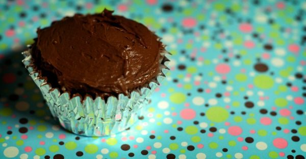

Creamy Chocolate Frosting
Poppa kept 2 versions of this dish.
Follow any recipe, mix and match, or use for inspiration for your own version. That's how Poppa did it.
Creamy Chocolate Frosting

Photo: ginnerobot (CC BY-SA 2.0)
A chocolate frosting made from melted butter, cocoa, salt, and vanilla with confectioners sugar and milk beaten in until smooth and creamy.
Directions
- Combine butter, cocoa, salt and vanilla. Add sugar and milk alternately, mixing until smooth and creamy.
- Combine the melted butter, cocoa, salt, and vanilla.
- Add the confectioners sugar and milk alternately, mixing until smooth and creamy.
Goes well with
Creamy Chocolate Frosting · 2

Photo: ginnerobot (CC BY-SA 2.0)
A quick chocolate frosting made by stirring together powdered sugar, cocoa, salt, skim milk, and vanilla until spreadable.
Directions
- Combine all ingredients in a medium bowl, stirring until frosting is of spreading consistency.
- Combine all ingredients (powdered sugar, cocoa, salt, skim milk, and vanilla) in a medium bowl.
- Stir until the frosting is of spreading consistency.
Goes well with
https://baron-3dl.github.io/normans-kitchen/recipe/creamy-chocolate-frosting-2.html